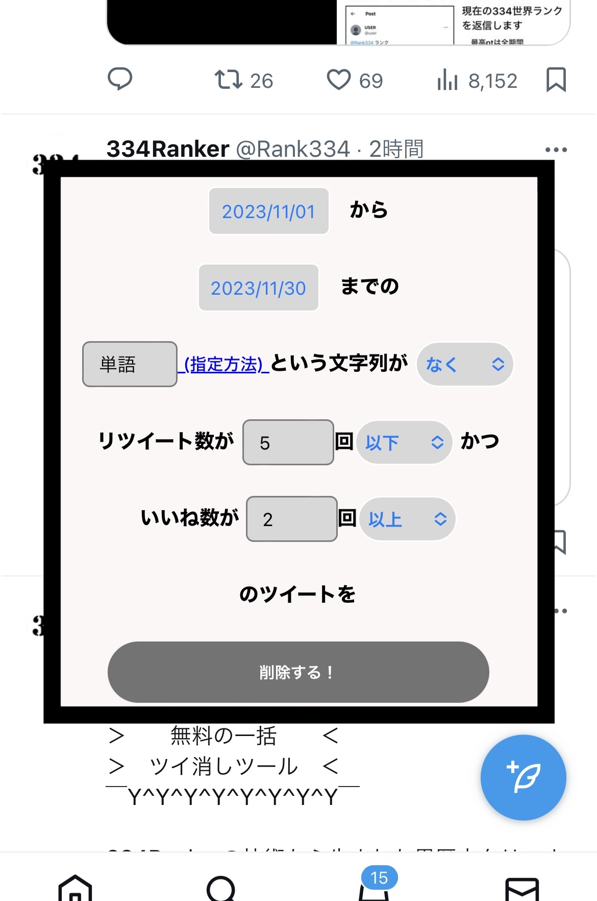

iPhone/iPadでの使い方
① 下のリンク(コード)をお気に入り登録する
ツイ消しツール
一方の指で上のリンクを長押し→ドラッグしながら、もう一方の指でお気に入りを開き、ドロップします。
難しければ、「Androidでの使い方」の①から③を行なってください。

画像はSafariですが、Chrome等でも同様です。
② Twitter(X)を開く
ブラウザでTwitter(X)を開いてください。このとき、ツイ消しするアカウントでログインしておきます。
③ お気に入りから「ツイ消しツール」を選ぶ
ツイ消しツールが開きますので、条件を指定して実行してください。
開かない場合は、ページを再読み込みしてください。
Androidでの使い方
① 下のボタンを押してコードをコピーする
最新のAndroidでは、⑤にてツールが開かない場合があります。その場合は下の軽量版（日付のみ指定可能）をご利用ください。
② このページをお気に入り登録する
Chromeの場合、メニューの★を選びます。

③ お気に入りの編集を選び、URLをコードに置きかえる

Chromeの場合、追加直後に画面右下に編集ボタンが出るので、押します。
既に入力されているURLを「すべて選択」し、コードを「貼り付け」ます。
④ Twitter(X)を開く
ブラウザでTwitter(X)を開いてください。このとき、ツイ消しするアカウントでログインしておきます。
⑤ Twitter(X)の画面のまま、アドレス欄に「ツイ消し」と入力し、出てきた「無料の一括ツイ消しツール！」を選ぶ

アイコンが★のものを選んでください。
ツイ消しツールが開きますので、条件を指定して実行してください。
開かない場合は、ページを再読み込みしてください。（それでも開かない場合は軽量版をお使いください）
PCでの使い方
① ブックマークバーを表示させる
既にブックマークバーが表示されていれば、この操作は必要ありません。

表示方法
Windowsなど : Ctrl+Shift+B
Mac : command ⌘+shift+B
② 下のリンク(コード)をブックマークバーに追加する
ツイ消しツール
このリンクをブックマークバーまでドラッグします。

③ Twitter(X)を開く
ブラウザでTwitter(X)を開いてください。このとき、ツイ消しするアカウントでログインしておきます。
④ ブックマークバーの「ツイ消しツール」を選ぶ
ツイ消しツールが開きますので、条件を指定して実行してください。
開かない場合は、ページを再読み込みしてください。
特徴
- 完全無料！
- アカウント提携不要
- 単語やいいね数などの条件指定可能
- 一度に数百から3000件の削除が可能

ツール実行において
- 開発者がデータを収集することは、一切ありません
- 1000件を超える削除をしようとすると、APIの制限が来る場合があります。その場合、ツールが止まり、一時的に検索などができなくなりますが、15分後に回復しますので、再度ツールを実行してください
- 直近から遡っていく方式のため、大昔のツイートは消すのに時間がかかる、または消せない場合があります
- 十分な動作確認をしていますが、意図しない動作をする場合が稀にあります。消したくないツイートが消えても責任は負えませんので、一度不要なアカウントで動作を確認するのをおすすめします
注意・利用規約
- 削除したツイートは元に戻せません
- 自己責任でご利用ください（本ツールの利用により発生したいかなる直接的・間接的損害に対して一切責任を負いません）
- コードの改変、再配布は禁止します
- 常識の範囲を超えた過度な利用はXのサーバーに負荷をかけますので止めてください
その他
- なぜ無料なのですか → 開発者が高校生で、稼がなくても生活できるからです
- なぜ他のツールではできないことができるのですか → Twitterのシステムを研究しまくったからです
- 情報が抜き取られることはありませんか → ありません。本ツールはTwitter社のサーバーとしか通信しません。PCであれば開発者ツールで確認することができます
- なんか怪しくないですか → では他の人のツールをお使いください
他の人に教えてみる
ver.1.1.0